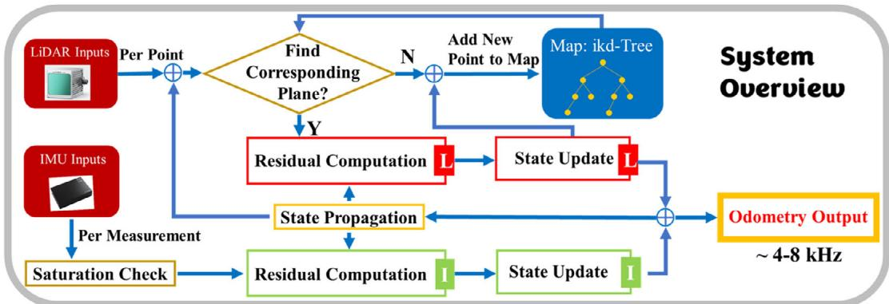
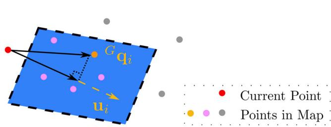
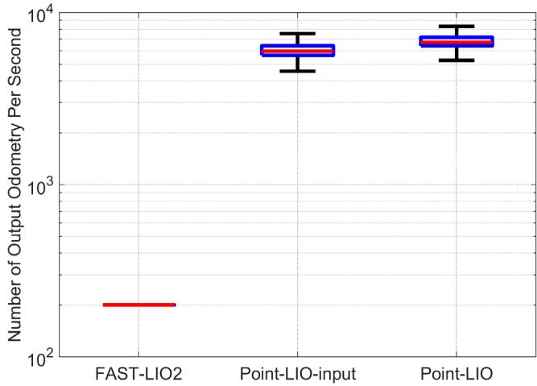
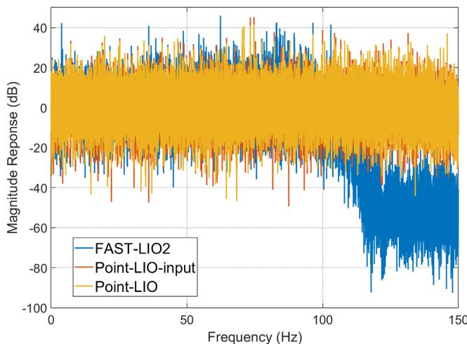
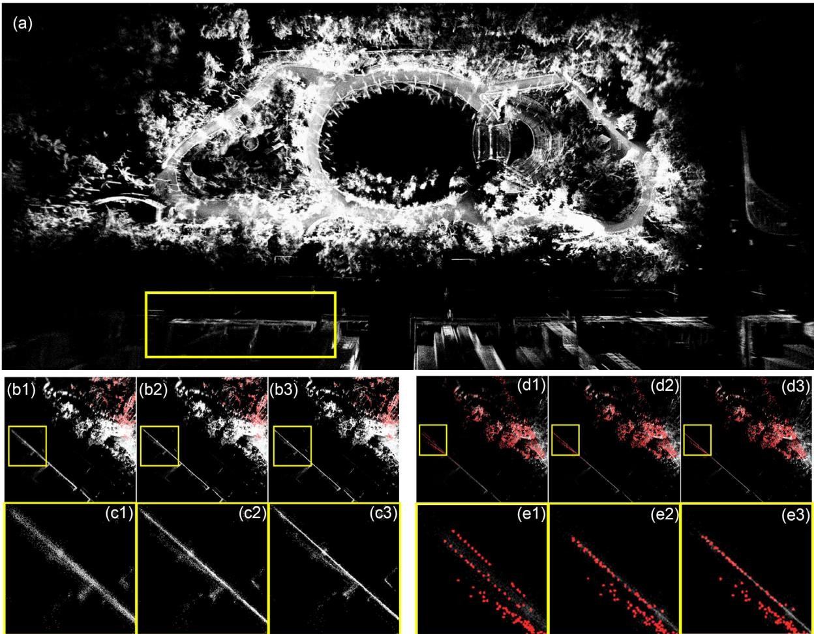

阶段 D · 激光主干 / Lesson 0086
Point-LIO（2023）：逐点处理与高带宽
如果连「帧」都不要了呢？每来一个点就更新一次状态，运动畸变从根上消失 ⚡
🎯 主题：逐点更新 · 帧内畸变 · 高带宽 · IMU 饱和
👥 作者：Dongjiao He、Wei Xu、Nan Chen、Fanze Kong、Chongjian Yuan、Fu Zhang（HKU MaRS）
📅 2023 · Point-LIO: Robust High-Bandwidth Light Detection and Ranging Inertial Odometry
本节目标
读完你应该能：说清「帧级更新」到底给 LIO 带来了哪两个麻烦；解释「逐点更新」为什么能从根上 （而不是事后补偿）消除帧内运动畸变；知道 4–8 kHz 与 75 rad/s 这两个数字分别在说什么；并且说清它和 FAST-LIO2 到底哪里一样、哪里不一样。
和前面课程怎么接
先接上一课 0085 （Faster-LIO 把地图查询降到 $O(1)$）与 0084 （FAST-LIO2 确立「不提特征 + 增量地图」）。更远一点，接第二季 0028 课 MSCKF 的「逐测量更新」思想——那一次是每个视觉观测更新一次，这一次是每个激光点 更新一次；也接第一季 0007 课（固态雷达点率极高，本篇正是为它准备的）。
1. 「帧」这个看起来天经地义的东西
先记住一个数量级：一台激光雷达每秒能打出几十万到上百万个点 。但请注意，这些点不是「咔嚓」一声同时出现的 ——它们是按时间先后，一个接一个被采出来的。
可是现有的 LIO 系统几乎都按「帧 」来组织数据：把 0.1 秒里采到的这一大堆点攒成一个包，叫一帧，然后一帧处理一次、一帧输出一个位姿。这个习惯是从视觉那边借来的——相机确实是一帧一帧的，快门一按，画面就是同一瞬间的。
激光雷达不是快门。 原文的说法很直接：点实际上是在不同时刻被依次采到的，把它们攒成一帧，就会引入人为的运动畸变 ，进而损害建图结果和里程计精度。
这其实就是第一课 0074 里讲的「运动畸变」，只是那时候我们是从 LOAM 的角度看的——LOAM 的处理方式是：先假设匀速，再把每个点按时间戳搬回去。而 Point-LIO 想问的是另一个更狠的问题：既然畸变是「攒帧」这个动作本身造成的，那我不攒帧行不行？
攒帧的第二个代价：带宽被采样定理锁死
畸变只是第一个代价，第二个代价影响更深远，它跟「你能跑多快」直接相关。
原文引入了一个概念叫里程计带宽 （odometry bandwidth）。它借用的是动态系统里的带宽定义：系统增益掉到 0.707 的那个频率 。翻译成人话就是——运动快到什么程度，这套里程计还能满意地估计出来 。运动频率超过带宽，估计就开始跟不上、开始失真。
那么带宽被什么锁住了？原文指出：如果里程计只按帧率输出位姿，那么根据奈奎斯特–香农采样定理 ，它能表达的最高频率就是输出频率的一半。于是「输出 200 Hz」这件事本身就意味着「带宽最多 100 Hz」——这是采样定理给的硬上限，不是工程调优能突破的 。
原文还顺带交代了前人做到哪一步
为了打破这个上限，已经有工作把一帧切成多个子扫描、收到一个子扫描就配准一次：LoLa-SLAM 做到 160 Hz ，LLOL 做到 80 Hz 。但原文说，这些仍然属于「扫描（或子扫描）对地图」，而 Point-LIO 走的是第三条路——点对地图 （point-to-map）：每收到单独一个点，就把它配到地图上 。
顺着这个思路，Point-LIO 论文的两大创新就摆出来了：
① 逐点（point-by-point）状态更新
每个激光点在它自己的采样时刻 被融合进状态，不攒帧。结果是：帧内运动畸变被从根本上移除 ，里程计输出频率可以逼近点的采样率，理论上能达到每秒几十万到上百万次，实践中是 4–8 kHz 。
② 随机过程增强的运动学模型
把 IMU 测量建模成「系统输出 」而不是「系统输入」，并把随机过程写进运动学。这样一来，即使 IMU 在中途饱和 了，系统仍然能平滑地估计出角速度和线加速度。
下面我们就先看第 ① 件事，也就是这篇论文的核心。

原图注（Figure 1）： System overview of Point-LIO. ⊕ indicates information addition.怎么看这张图： ① 先看输入那一侧——它是两路独立的、带时间戳的测量流 ：激光点是按照时间顺序一个一个来的，IMU 数据也是一条一条来的，它们不共享同一个「帧边界」 ；② 再看 ⊕ 这个符号——它表示「新来的一条测量带来的信息，被加到当前的状态估计上」，也就是一次滤波更新；③ 关键就在于：这个 ⊕ 每来一个点就执行一次 ，而不是「一帧执行一次」。请把这张图和我们上一课 0085 里 Faster-LIO 的框架图对一下：地图结构那部分形状是一样的，变的是「更新的节奏」。
2. 逐点更新：每来一个点就更新一次状态
先把「逐点更新」这一个循环讲清楚，它其实只有四步。
原文的描述是：对于收到的每一个 激光点，先去地图里找一块与之对应的平面；如果找到了匹配的平面，就算一个残差、用流形上的卡尔曼滤波更新系统状态；如果没找到，就直接用卡尔曼滤波预测出来的位姿 把这个点加进地图，然后处理下一条测量 （下一条可能是激光点，也可能是 IMU 数据）。
第一个式子是「我预测下一步走到哪」：把状态按时间推进一小段 $\Delta t_k$。第二个式子是「这个点告诉我什么」：${}^{\mathrm{G}}\mathbf{u}_k$ 是地图上那块平面的法向（表示平面朝哪边），${}^{\mathrm{I}}\mathbf{p}_{mk}$ 是雷达坐标系下的这个点，$\mathbf{n}$ 是雷达测距噪声，${}^{\mathrm{G}}\mathbf{q}_k$ 是平面上的一点。整个式子的意思就是「把点变换到世界系后，它到那块平面的距离应该是 0」 ——这就是第一季就见过、第二季 0022 课详细讲过的点到面残差。
第三个式子是卡尔曼滤波的标准更新形式。这里有一个值得注意的细节：Point-LIO 用的是普通 EKF，不是 FAST-LIO 系的迭代卡尔曼滤波（iEKF）。 这不是偷懒，原文给了三条理由：
更新频率极高 ，所以不需要在每一步里反复迭代把线性化点磨到最优；
对 IMU 测量来说，它的测量方程本质上是线性 的；
逐点更新时，激光点的测量模型只有 1 维 （就是一个点到面的距离），维度低、系统又稀疏，计算量很小。
所以「不迭代」在这里是因为更新太密而不需要迭代 ——这正好和 FAST-LIO2 的情况相反：FAST-LIO2 一帧里要一次性吞下上千个点，线性化一次误差太大，所以必须迭代。同一件事，粒度不同，最优做法就不同。
为什么这能「从根上」消除畸变
这一点必须说透，因为它是最容易被含糊过去的地方。
回顾第一课 0074 的做法：LOAM 先攒一帧，然后事后补偿 ——假设这一帧内匀速，再把每个点按时间戳搬回它应该在的坐标系。这个补偿依赖一个假设（匀速），假设不成立时就会留下误差。
FAST-LIO2 用的也是「事后补偿」这一族：用 IMU 反向传播 把一帧内的点逐个纠正过去。
Point-LIO 干脆不产生需要补偿的东西。 因为每个点在到达的瞬间就被融合、被配准、被放进地图了——它从来没有被「先按错误位姿存起来、以后再搬回去」过。不存在一个「帧」的边界，也就没有帧内畸变这回事。 原文用的说法是 fundamentally removes（从根本上移除）。
互动判断
Point-LIO 的「逐点更新」与 FAST-LIO2 的「反向传播去畸变」，最本质的区别在哪？
它处理一帧的速度更快
它根本不产生帧内畸变
它完全不用惯性测量单元

原图注（Figure 2）： Illustration of direct registration of LiDAR point to map. $\mathbf{q}_i$ and u refer to a point in the map and the normal vector of the plane in blue.怎么看这张图： ① 先看清主角是单独一个点 （图中那个红色的点），而不是一整片点云——这就是「逐点」的字面含义；② 蓝色的那块小平面是地图里已有的、由邻近点拟合出来的局部平面 ，$u$ 是它的法向，$q_i$ 是它上面的一点；③ 残差就是「这个红点到这块蓝面的距离」。所以整篇论文的每一次更新，用的都是这么一幅小图里的几何关系，只是它每秒要做几百万次。
3. 第二个创新：把 IMU 从「输入」改成「输出」
逐点更新解决了畸变问题，也把输出频率推得很高。但原文说，光做到这一步，带宽还是卡在 IMU 上 。
为什么？因为几乎所有的 LIO 都是这样用 IMU 的：把 IMU 测到的角速度和加速度当作系统的输入 ，用它去「推」状态往前走。这个用法有一个隐含前提：IMU 的读数是可信的。 一旦机器人转得太快、加速度太大，超出了 IMU 的量程，读数就被削平（这就是饱和 ），推出来的状态立刻就跑偏了。
Point-LIO 的做法是把关系倒过来：不把 IMU 当输入，而是把它当作系统的输出。
具体来说，它用了一个随机过程增强的运动学模型 ：把角速度和加速度也当作系统状态的一部分（让它们自己按某个随机过程演化），然后把「IMU 测量」写成这些状态的一个观测方程：
左边是 IMU 报出来的读数，右边是我们真正想知道的角速度 $\omega_k$、加速度 $a_k$（加上偏置 $b$ 和噪声 $n$）。这样一来，角速度和加速度不再只能「从 IMU 读」，而是可以被滤波器「估」出来 ——IMU 读数只是关于它们的一条观测而已。
于是当 IMU 饱和时，会发生什么？饱和通道的读数被丢弃不用（原文说：对 IMU 的每一个通道单独 做饱和检查，饱和的通道就不参与状态更新），但系统仍然靠激光点不断提供的约束、以及把角速度/加速度作为状态来估计的机制，把这段最疯狂的运动扛过去。
对应地，状态流形变成了 $\mathcal{M} = SO(3)\times\mathbb{R}^{21}$，维数 24 ——比 FAST-LIO2 的 24 维刚好对应，但里面装的东西不同：Point-LIO 把角速度和线加速度也放进了状态。
互动判断
机器人在旋转台上被电机带着猛转，角速度峰值达到 75 rad/s，而这台 IMU 的量程只有 35 rad/s。按 Point-LIO 的建模方式，会发生什么？
超出量程的读数会毁掉整个系统
饱和通道被丢弃但状态仍可估
用比例系数把饱和值放大回来
4. 高带宽：4–8 kHz 与 75 rad/s
现在把数字摆出来。这一节的所有数字都能在原文的表里找到出处。
帧级更新 vs 逐点更新：同一份数据，处理粒度不同
上：帧级（FAST-LIO2 这一类）——攒满一帧才更新一次
墙
墙被拉弯，变厚
所有点都被摞到同一时刻
点到达（时间 →）
整帧只更新 1 次
0.1 秒内收到的 N 个点，都在排队等这一帧结束
下：逐点（Point-LIO）——每个点一到就更新一次
墙
墙保持笔直、保持薄
每个点在自己的采样时刻就更新一次状态
输出频率 4–8 kHz
一个把点「攒起来再算」，一个「来一个算一个」——墙的厚薄就是这么差出来的
这张图在画什么： 同一段扫描、同一个走廊，在「帧级更新」与「逐点更新」两种粒度下的结果差异。上排红、下排绿，唯一的变量是处理的粒度。怎么看这张图： ① 先看两排的走廊 ——上排的墙被拉成了一条弯向走廊内部的弧线，下排的墙是笔直的一条；② 再看两排的时间轴 ——上排只有末尾那一个方块是「更新」，前面那十几个灰点全在排队等；下排则是每一个点到达时就有一个绿点执行更新；③ 最后记住两组数字：上排那种做法按帧输出（原文 Table 2 里 FAST-LIO2 是 200 Hz），下排这种做到 4–8 kHz。要记住的一句话： 「帧内运动畸变」不是激光雷达的固有毛病，而是「攒帧」这个动作带来的 ；不攒，它就不存在。
为什么「逐点」能扛住剧烈运动
一帧 0.1 秒：机身姿态一路在变
攒成一帧再处理
翻了几十度 → 点糊成一片
逐点处理
每个点在自己的时刻被正确处理
同一段剧烈运动、同一个传感器：粒度越粗，点越容易被「糊」掉
这张图在画什么： 左边是一台无人机在做翻滚机动时的连续姿态，右边是这同一段运动在「攒帧」与「逐点」两种处理方式下，扫到同一面墙的结果。怎么看这张图： ① 先看左边那五台机身——它们不是五个不同的无人机，而是同一个机身在一帧（0.1 秒）内的五个瞬间 ，注意机身朝向从倾斜一路翻到接近倒转，说明这 0.1 秒里姿态变化极大；② 右上格是「攒帧」：这一整帧的点被摞到同一个位姿上去算，于是本来平直的墙变成了一条上下散开的粗带（红点糊成一片）；③ 右下格是「逐点」：每个点都在它自己被采到的那一刻就参与配准，墙仍然是墙（绿点整齐排在一条线上）。要记住的一句话： 帧内畸变的大小取决于「这 0.1 秒里姿态变了多少」 ；运动越剧烈，攒帧的代价越大，而逐点处理的代价不随运动剧烈程度增长 ——这正是它能扛住 75 rad/s 的原因。
先看原文 Table 2 给出的输出频率与带宽 对比。这张表里有一个消融系统叫 Point-LIO-input ：它只 采用了逐点更新，但仍然把 IMU 当输入（也就是没有第二个创新）。把它列进来，是为了分离出两个创新各自的作用。
指标（原文 Table 2）
FAST-LIO2
Point-LIO-input
Point-LIO
里程计输出平均频率 200 Hz
6132 Hz 6955 Hz
带宽 100 Hz
超过 150 Hz
超过 150 Hz
注意带宽那一行：原文特别说明，试这些数字时用的真值来自 Vicon 动捕系统，它本身的采样率上限是 300 Hz——也就是说 150 Hz 已经超出了测量设备的能力，论文只能写「超过 150 Hz」 。而 FAST-LIO2 的 100 Hz 带宽，恰好等于它 200 Hz 输出频率的一半，正好卡在奈奎斯特上限上 ——这反过来印证了上一节讲的逻辑链。

原图注（Figure 8）： Number of output odometry per second of FAST-LIO2 and Point-LIO-input and Point-LIO.怎么看这张图： ① 这张图的纵轴是「每秒输出多少个位姿」，请直接去比较三条统计的量级差 ——不是差百分之几十，而是差三四十倍；② 原文的结论是 Point-LIO 能提供 4–8 kHz 的高频里程计输出（论文这段话里的 4–8 kHz 与表格里约 7000 Hz 的平均值是一致的口径）；③ 别把这张图理解成「精度更高」——它讲的是输出有多密 ，密到足以让「延迟」降到微秒级，而延迟正是剧烈运动下最要命的东西。
75 rad/s：转到 IMU 都测不出来
高频输出有什么用？原文用一台被步进电机带着转的旋转台来回答，数字很硬：
旋转实验（原文 Fig. 10–13）
偏航角速度的峰值达到 75 rad/s ——而这块 IMU 的量程只有 35 rad/s ，超了两倍多。这个高转速还带来了约 80 m/s² 的峰值加速度，同样远超约 30 m/s² 的量程。
结果：在 IMU 从大约第 50 秒开始饱和、持续到 106 秒的这段时间里，FAST-LIO2 和 Point-LIO-input 的旋转估计立刻发散 ，位置也开始漂移；而 Point-LIO 仍能给出合理的估计。
精度（同一实验）
整段过程的估计误差（RMSE）：旋转 4.60° 、平移 0.233 m 。原文自己评价说，平移误差主要来自 y 方向（这个方向的约束从一开始就不足），在这么极端的运动下这个量级是可接受的。
另外，竞速无人机做快速翻滚时角速度达到 59.37 rad/s ，同样超过 35 rad/s 的 IMU 量程，系统仍然扛住了。

原图注（Figure 9）： Bandwidth analysis of FAST-LIO2, Point-LIO-input, and Point-LIO.怎么看这张图： ① 横轴是输入运动的频率 ，纵轴是输出与真值的幅值比 （分贝）——这就是典型的「频率响应」画法，和我们熟悉的动态系统带宽是同一套语言；② 看图上的曲线在什么频率开始往下掉 ：FAST-LIO2 大约在 100 Hz 附近就开始下滑，这正是它的带宽；③ 而 Point-LIO 那两条在 150 Hz 附近还没明显下滑——原文说这已经超出 Vicon（最高 300 Hz 采样）的测量能力，所以只能记成「超过 150 Hz」。这是本篇「高带宽」三个字最直接的实验证据。
最后补一个工程上很关键的数字：在所有序列上平均，系统每秒处理约 33710 个点 ，平均每个点耗时约 9 微秒 。整套系统跑在一台 DJI Manifold 2-C 机载计算机上（1.8 GHz 四核 i7-8550U、8 GB 内存）。
5. 它和 FAST-LIO、FAST-LIO2 是什么关系
这一节必须说清楚，因为很容易想当然。先看作者：Point-LIO 的作者是 Dongjiao He、Wei Xu、Nan Chen、Fanze Kong、Chongjian Yuan、Fu Zhang ——来自香港大学 MaRS 实验室，与 FAST-LIO / FAST-LIO2 是同一个团队 。所以它读起来不像「挑战者」，更像「同一家人往下走的一步」。
它沿用了什么
地图结构： 原文明确说，为了在允许新点插入的同时快速搜索平面，用的是 FAST-LIO2 提出的增量 k-d 树 ikd-Tree 。也就是说，0084 课还的那个「ikd-Tree 之债」，本篇是直接继承的 ，没有另起炉灶。测量模型： 同样是点到面直接配准（和上一张原图 Fig. 2 一样），不提特征——这条「不提特征」的路线由 0084 课确立，本篇照走。一堆具体参数： 局部地图大小 $L = 1000$ m、空间降采样分辨率 0.5 m、ikd-Tree 的重平衡阈值 $\alpha_{\mathrm{bal}} = 0.6$ 与 $\alpha_{\mathrm{del}} = 0.5$、$N_{\mathrm{max}} = 1500$、激光测量噪声 $\bar{R}_k = 10^{-2}\cdot\mathbf{I}$——原文说这些值沿用了 FAST-LIO2 的默认参数 ，并且对所有序列保持不变。
它改掉了什么
FAST-LIO2（2022）
Point-LIO（2023）
更新粒度 帧级：一帧更新一次
逐点：每来一个点更新一次
滤波器 迭代卡尔曼滤波 iEKF
普通 EKF （更新率太高，不必迭代）
IMU 的角色 系统输入（用于前向传播）
系统输出 （随机过程增强运动学模型）
去畸变方式 事后补偿：IMU 反向传播
不产生畸变 ：点一到就融合
地图结构 ikd-Tree
ikd-Tree（沿用 ）
输出频率 / 带宽 200 Hz / 100 Hz
约 7000 Hz / 超过 150 Hz
请注意最后一行的关系：FAST-LIO2 的 200 Hz 恰好是它带宽 100 Hz 的两倍 ，这不是巧合，而是奈奎斯特上限的必然结果。所以「高带宽」这件事没法靠给帧级系统调参得到——必须换粒度 。这就是这篇论文存在的理由。
那 Faster-LIO（0085）呢
Faster-LIO 换的是地图这一侧 的数据结构（ikd-Tree → 体素哈希 iVox），让「每一次查询」变快；Point-LIO 换的是更新这一侧的节奏 （帧 → 点），让「更新的次数」变得极密。两篇改的是不同的零件，因此它们并不冲突——一个是「让你查得快」，一个是「让你算得频」。
6. 实验数字与边界
先看三个自采序列的漂移数字。这三个序列是同一台小车在三种不同结构程度的环境里跑的：Park （非结构化）、Square （半结构化）、Corridor （结构化），每段都是回到起点来量漂移。激光雷达的包频率是 10 Hz。
漂移（米，原文 Table 1）
FAST-LIO2
Point-LIO-input
Point-LIO
Park （非结构化）1.242 0.064
0.080
Square （半结构化）0.041
0.038
0.039
Corridor （结构化）0.047
0.043
0.047
这张表值得盯着看很久，因为它不是「新方法全面更好」的故事 ：
在 Corridor 里，三者几乎完全一样（0.047 / 0.043 / 0.047）；在 Square 里也都在 0.04 上下；
差别只出现在 Park ——那是一个非结构化环境，FAST-LIO2 干脆没能回到起点 （漂移 1.242 m），而两个逐点版本都在 0.1 m 以内；
原文把原因说得很直白：Park 是非结构化环境，这会让运动畸变对里程计精度的影响变得更明显 。结构好、约束足的地方，畸变被其它约束吸收掉了；结构差的地方，畸变就直接变成漂移。
还有一个细节：Point-LIO-input（0.064）在这一项上比 Point-LIO（0.080）略好 。原文解释，原因是 Point-LIO-input 仍然用原始 IMU 读数去传播状态，而 Point-LIO 用的是滤波后的量——所以在这个IMU 没有饱和 的序列上，两者各有微小得失。这说明第二个创新（把 IMU 当输出）主要不是为常规场景服务的，它是为饱和场景服务的 。

原图注（Figure 5）： Illustration of motion distortion for the Park sequence. a): Map result of the whole area of Point-LIO; b1–b3): Map results for a local area of FAST-LIO2, Point-LIO-input and Point-LIO, and their further zoom-in figures c1–c3); d1–d2): In-frame motion distortion of FAST-LIO2, Point-LIO-input and Point-LIO, and their zoom-ins e1–e3).怎么看这张图： ① 先看 a) ，那是整个公园区域的全局地图，用来定位这片局部区域在哪里；② 再看 b1 → b3 这一组：同一小块区域里，b1 是 FAST-LIO2 的结果，b2、b3 是两个逐点版本——请盯着墙面上点的厚度 看，原文说这里 FAST-LIO2 的墙更厚；③ d、e 两行是直接把「一帧内的畸变」放大给你看：原文说明，其中红色点是本帧配准上去的点，白色点是此前的累积地图——红白两点如果明显错开、排成一条粗带，那就是畸变；④ 原文同时提醒：Point-LIO-input 与 Point-LIO 两者都用了逐点更新，Point-LIO 只是略好一点（差别来自它用的是滤波后的 IMU 量）。按原文的字母顺序推断 ，这张图的子图 (c) 是 (b) 的放大、(e) 是 (d) 的放大。
再看耗时（原文 Table 4），因为「逐点」听起来就很贵：
每帧耗时（毫秒）
FAST-LIO2
Point-LIO-input
Point-LIO
10 Hz 序列 · Park 39.84
32.09
32.94
10 Hz 序列 · Square 21.89
25.20
25.41
10 Hz 序列 · Corridor 28.36
28.76
30.59
100 Hz 序列 · Odo 1.18
1.70
1.69
结论是：逐点并没有把系统变得明显更贵 。在 10 Hz 的序列上，Point-LIO 与 FAST-LIO2 基本在同一水平（有的序列略快、有的略慢）；在 100 Hz 的序列上都在 2 毫秒以内。原文给的总评是：精度与耗时都和当前最好的 LIO 方法相当 ，而带宽显著更高。
原文承认的边界（逐条）
① 一开始就饱和，就救不回来
原文说得很明确：如果 IMU 的饱和从一开始就持续存在，并且初始角速度已经超出量程，Point-LIO 会失败。 原因是初始角速度的估计被置为 0，而真值已经超过 35 rad/s，这个巨大的初始误差会把一开始的地图带偏。
② 需要一个外部初始化
承接上一条，系统需要外部给出初始化（例如把初始速度置为 0、并在一段静止或温和的时段里起步）。它不是那种「从任意疯狂状态冷启动」的系统。
③ 起始角速度越大，精度越差（但还活着）
原文 Table 3 给了一串台阶：起始角速度 6.28 → 31.40 rad/s 时，旋转 RMSE 从 6.9° 一路涨到 16.4° ；34.85 rad/s 时是 18.7° ；到 37.68 rad/s 直接记为 fail。注意这条曲线是连续变差的，不是突然断掉——这正是「边界」的真实样子。
④ 常规场景下它并不碾压
如前面 Table 1 所示，结构化环境里三者的漂移几乎一样；Park 那种非结构化环境才是它拉开差距的地方。所以它的价值定位是「在极端运动下还能工作 」，而不是「平均精度更高」。
课后练习
用自己的话说清：为什么「逐点更新」能做到 LOAM 与 FAST-LIO2 的「事后去畸变」做不到的事情？
展开查看答案
关键差别在于「畸变是在什么时候被引入的」 。
① LOAM 与 FAST-LIO2 都遵循「先攒帧、再纠正」的流程：一帧内的点先按某个位姿 被存起来（通常是扫描起点或终点），然后靠匀速假设或 IMU 反向传播，把这些点一个个搬到它们应该在的位置。这里的「纠正」是一个有前提的动作 ——匀速假设不成立、或者 IMU 传播不准，纠正就会留下残差。
② Point-LIO 的流程里没有「攒」这个动作 。每个点一到达，就立刻用当时的位姿去做配准、更新状态、进地图。它从来没有被存到一个「错的位姿」上，因此也就不存在「需要被搬回去」这件事。
③ 原文用的词是 fundamentally removes（从根本上移除）。注意这个说法比「补偿得更好」要强：它不是说 Point-LIO 的补偿更准，而是说产生畸变的那一步被删掉了 。
原文 Table 2 里 FAST-LIO2 的输出是 200 Hz、带宽是 100 Hz。这两个数字之间有什么关系？为什么说这解释了「为什么必须换粒度」？
展开查看答案
关系是：100 Hz 正好是 200 Hz 的一半。 而这正是奈奎斯特–香农采样定理给出的上限——一个按固定频率输出的离散序列，能无歧义表达的最高频率就是输出频率的一半。
所以 FAST-LIO2 的带宽不是某个参数没调到最优，而是被「每帧输出一个位姿」这个结构锁死的 。你可以把输出频率提高一点，但带宽始终是它的一半，永远追不上「每秒几万点的采样率」。
这就是为什么 Point-LIO 的答案不是「让帧更快」，而是取消帧 ：输出频率直接跟着点的采样走（约 7000 Hz），带宽才第一次超过 150 Hz——原文说这个值已经超出 Vicon 真值系统的测量能力了。
Point-LIO 用普通 EKF，而 FAST-LIO2 用迭代 EKF（iEKF）。请解释为什么在这个系统里「不迭代」反而是合理的。
展开查看答案
原文给了三条依据，合起来讲就是「没必要迭代 」：
① 更新率极高。 状态每收到一个点（或一条 IMU 数据）就被修正一次，误差根本来不及长大。iEKF 迭代的目的是「在当前线性化点附近再找更优解」，而在这里，上一次更新刚做完，状态就已经很接近真值了，再迭代的收益很小。
② IMU 的测量方程本质上是线性的 （式 7 里 IMU 读数与角速度、加速度是直接相等加偏置噪声的关系），非线性主要来自姿态，而这里姿态的误差在两步更新之间变化很小。
③ 激光点的测量模型只有 1 维 （就是一个点到面的距离），系统又高度稀疏，单次更新的计算量本来就很小——省掉迭代，直接省下时间。
反过来说，FAST-LIO2 必须迭代，是因为它一帧要一次性吞下上千个点，此时位姿的初值与最优值的差距较大、测量模型在该点附近高度非线性，一次线性化会明显有偏。同一个「要不要迭代」的问题，答案由更新粒度决定。
在 Park 序列上，Point-LIO-input（0.064 m）反而比 Point-LIO（0.080 m）漂移更小。这个结果是否说明「把 IMU 当输出」这个创新没用？请说清理由。
展开查看答案
不能这样推论，因为这个序列根本没有触发第二个创新要解决的问题 。
① Park 是机器人在公园里跑的序列，IMU 没有饱和 。在这种条件下，「把 IMU 当输出」与「把 IMU 当输入」两条路都能拿到可用的 IMU 信息，差别只体现在细节上：Point-LIO 用的是滤波后的量，Point-LIO-input 用的是原始读数，因此后者在某些高频细节上反而更贴——0.064 与 0.080 的差别就是这么来的，量级都很小（厘米级）。
② 第二个创新的真正战场是旋转实验：IMU 从大约第 50 秒开始饱和，此时 FAST-LIO2 与 Point-LIO-input 的旋转估计立刻发散，而 Point-LIO 仍能给出合理估计。也就是说，它的收益要在 IMU 饱和时才会显现 。
③ 这也提醒我们读论文表格时要注意「这张表测量的是哪种能力」。同一篇论文里，Table 1 与 Table 3 回答的是完全不同的问题。